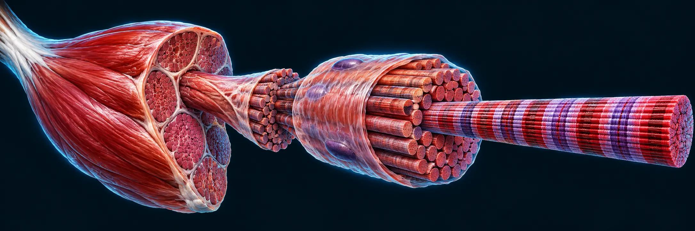

МАСШТАБИ ОДНІЄЇ СИСТЕМИ
Від м’яза до молекул
Інтерактивна подорож від цілого м’яза до механізмів усередині волокна.
Усі теми модуля
Як користуватися моделлю
Обери структуру на ілюстрації або перемикай масштаб кнопками. Пояснення й джерела — поруч із моделлю.
Навчальний модуль · межі перевірки
Механістичні пояснення не встановлюють величину ефекту у людей. Рівні впевненості не оцінено; науковий перегляд не завершено. Наявні джерела — контекстні посилання, а не автоматичне підтвердження кожного опису.

Як читати ілюстрацію
Художня ілюстрація · масштаб і кількість структур умовні. Обраний масштаб наближає ілюстрацію, а не показує мікроскопічне вимірювання.
Повзунок не задає силу чи відсоток реального скорочення. Довжина філаментів незмінна; змінюється їх перекриття.
Перейти до кроків скорочення →Пояснення, джерела та межі знання
Ті самі описи, що біля моделі та сцен, зібрані в картки. Вони не є окремою оцінкою ефективності тренувань.
Відкрити всі картки пояснень
Джерела та межі знання
Механістичні пояснення не встановлюють величину довгострокового ефекту у людей. Окремі твердження та оцінки впевненості для нового модуля ще потребують наукового перегляду.